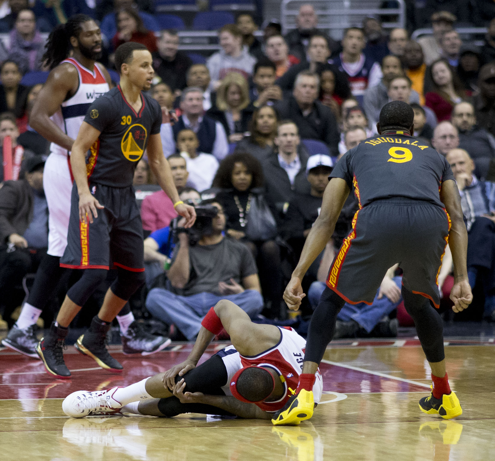
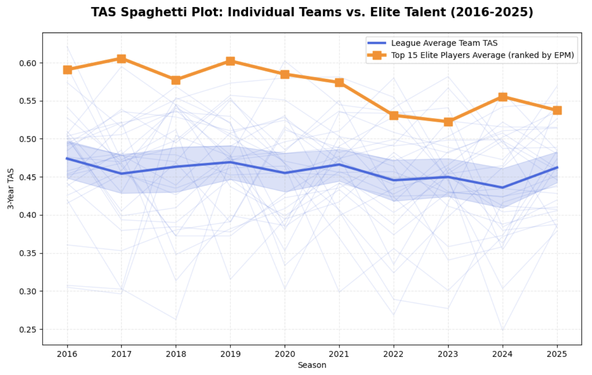
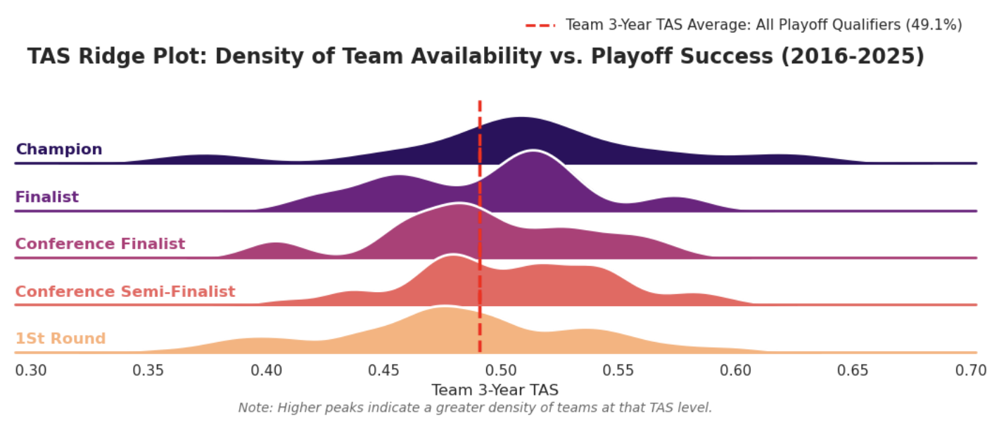
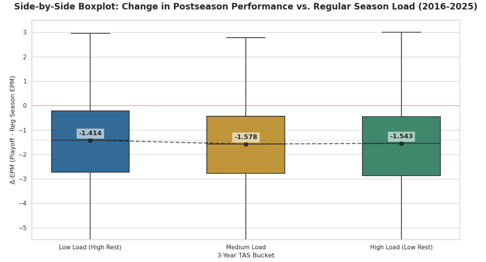
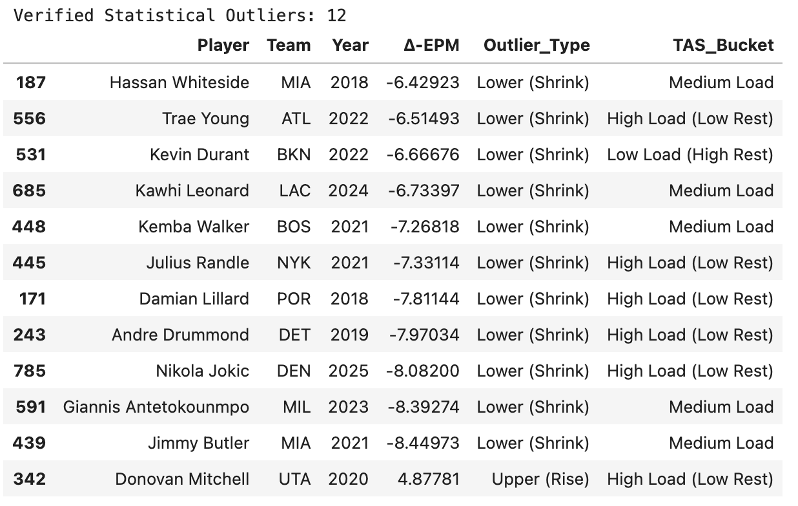

Rest vs. Rust: An Analysis of the 65-Game Rule
By Yash Dighe | June 11, 2026

Introduction
At the dawn of the 2023-2024 NBA season, Adam Silver announced the “65-game rule” - a form of redress against excessive load management practices seen in key franchise players. Under the new CBA, players who break the 65-game rule are effectively disqualified from major awards. Anthony Edwards serves as a notable and more recent example of this, as he fell shy of the award by one game and failed his appeal for exceptional circumstances. League awards offer potentially massive financial incentives, including substantial contract bonuses, supermax eligibility, and contract extensions, so missing out on them can leave huge dents on players’ careers. However, the league argues that teams’ prioritization of “postseason health” damages their holistic image during the regular season.Is the rest a legitimate concern from franchises, or is the league correct in believing their product is needlessly diminishing in value from it?
Quantifying Load Management
To better demystify the question, an understanding of load management trends over the last decade can paint a picture. However, an additional concern arises: how do you assess load management? A lot goes into it. Simple counting stats, such as games played, often mask the nuances of physical toll. A player may suit up while playing restricted minutes to recuperate, or see their season ended by a sudden injury - both scenarios that skew basic data metrics but are captured more accurately by Total Availability Score (TAS).Defining relevant metrics:
- TAS (Total Availability Score): Proportion of total played minutes to the maximum available minutes to be played.
- 3-Year TAS Average: A rolling three-year average of an individual player’s TAS. For example, Shai Gilgeous-Alexander’s 2025 score is the mean of his availability from 2023 through 2025.
- Team 3-Year TAS Average: The primary metric for assessing a team’s load management frequency, calculated as the three-year rolling average of the mean TAS for a team’s top five players, ranked by EPM (Estimated Plus-Minus).
Defining a more concrete metric that’s resistant to unusual play times or injuries in a single season (by taking the mean over three years) helps narrow the focus on analyzing macro load management trends. Coupling these trends with an all-purpose impact metric for evaluating player performance, we can better distinguish the elite players from the rest.
- EPM (Estimated Plus-Minus): An impact metric that estimates a player’s average impact every 100 possessions on the court.
Exploration
>
In this visualization, we plot the 3-year TAS averages of the NBA's 15 most impactful stars against the score from each team in the league for the last decade (highlighted by the 30 miscellaneous lines). The bolder blue line represents the league average, cast inside a 95% Confidence Interval. This shaded region defines the “expected” range of team health, and any data point falling outside of it, such as that of the orange line, represents a statistically significant deviation from the league-wide norm.
From a front-office perspective, the difference in usage between a franchise star and a rotational player is clear. However, over the course of a decade, season-wide usage among these stars has considerably fallen, and while the league-wide TAS baseline has remained relatively constant, superstar availability plummeted from a high of 61% in 2017 to a new low of 52% in 2023. This difference highlights the primary concern behind the 65-game rule. Yet, following the implementation of the policy (2023), we see a sharp pivot in the elite availability decline - jumping nearly 4 percentage points in a single season. While it is hard to say whether the rule is the main cause of this, it shows that in the short time since its enactment, the curve of load management has shifted back toward the league’s commercial interests. With a more statistically driven understanding of both perspectives on the policy, let’s try to assess whether one of the primary motivators for the load management trends in the last decade is truly warranted - preserving star health for postseason success.
Team Playoff Success Trends
The below ridge plot effectively demonstrates the relationship between Team 3-Year TAS and team playoff outcomes each season in the last 10 years.
Conventional wisdom suggests that prioritizing regular-season rest should correlate with deeper playoff runs. However, contrary to expectations, the NBA champion distribution demonstrates a peak much greater than that of the average playoff team availability score of 49.1% (as denoted by the vertical red line). While the correlation is slight, a clear association exists between higher Team TAS and advancing through the bracket, as evidenced by the rightward shift of the density peaks. In the same breath, the teams that lost to these NBA champions in the finals appear to be part of one of two groups: high rest (low TAS) or low rest (high TAS) teams, so it’s apparent that rest isn’t the only defining factor.
Admittedly, the smaller sample size of Champions and Finalists relative to the larger pool of early-round exits makes it difficult to discern definitive, league-wide correlations at the team level. Because team success is a product of countless variables beyond health, such as coaching, depth, and chemistry, studying the change in individual player performance between the regular season and the playoffs in relation to availability may offer a more constructive analysis.
Change in Player Performance (Reg. Season vs. Playoffs)
To better address the impact of greater load management on franchise players' playoff success, we once again take the 5 highest-rated EPM players for each team over the last decade. These players were categorized into three distinct buckets (Low, Medium, and High Load) based on their 3-Year TAS, with each group representing an equal distribution of the player pool. To isolate individual performance shifts, we utilize Delta Estimated Plus-Minus, defined as Δ-EPM (Delta Estimated Plus-Minus): Playoff EPM - Reg. Season EPMBy plotting the metric against the computed TAS buckets, we can assess the change in impact each player has on each group of respective availability they’re categorized as.

As expected, the shift to postseason play brings a universal decline in efficiency, reflected in the negative median Δ-EPMs across all three categories. While the Medium and High Load buckets indicate a slightly larger drop-off than the Low Load group, these differences are marginal. In fact, the Low Load group may only be closer to true zero because the players that compose the strata are lower-minute rotation players. Thus, since their average EPMs were never high to begin with, a considerable fall-off in performance, by their standards, would fail to create as much of a skew as the average player in a higher-load group. Rather, the more interesting product of this boxplot analysis doesn’t come from their medians, but rather their outliers.
Conclusion - Player Performance Outliers

Of the twelve outliers across all three boxplots, eleven were lower outliers, indicating a drastic fall in playoff performance. Notably, none of these eleven outliers belonged to the Low Load (High Rest) TAS group. With this significantly large number of burnouts, a new notion of the load management debate arises. Perhaps the primary motivator for heightened load management is not the pursuit of greater playoff performance, but rather, the mitigation of the worst-case scenario - a run-ending playoff burnout from a franchise star.
With the new CBA’s 65-game rule, it effectively bets that the product value generated from a more player-attended regular season outweighs the risky, albeit unlikely, event of total performance collapse in the postseason by the league’s most-viewed stars.
References
https://www.basketball-reference.com/
https://dunksandthrees.com/epm
Photo Credit: Keith Allison - https://flickr.com/photos/keithallison/